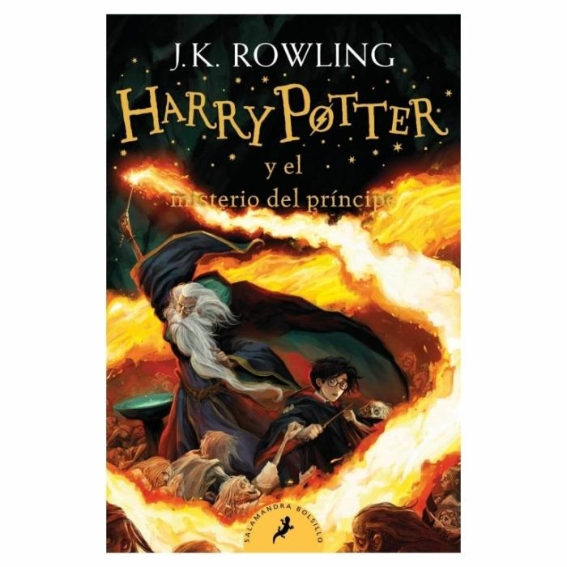
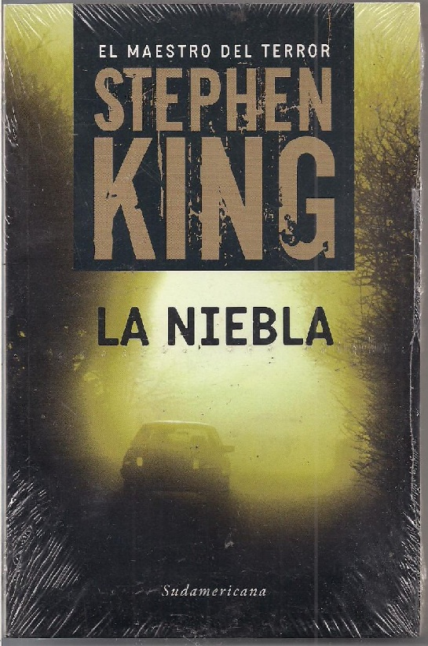

Informacion de mis estudios
Libro favorito: Cementerio de mascotas
Narra la historia del doctor Louis Creed, que al poco de mudarse con su esposa Rachel y sus dos hijos pequeños desde Boston a un recóndito paraje de Maine,
descubre un misterioso cementerio escondido en lo más impenetrable del bosque , a escasa distancia del nuevo hogar familiar.
Cuando la tragedia alcanza a la familia, Louis recurre a su peculiar vecino,
Jud Crandall lo que pone en marcha una oscura reacción en cadena que despierta a una insondable fuerza maléfica con espantosas consecuencias.

Segundo Libro: Harry Potter y el Principe Meztizo
El tercer año de estudios de Harry en Hogwarts se ve amenazado por la fuga de Sirius Black de la prisión de Azkaban. Al parecer,
se trata de un peligroso mago que fue cómplice de Lord Voldemort y que intentará vengarse de Harry Potter.

Tercer Libro: La niebla
En la que la pequeña ciudad de Bridgton, Maine se ve envuelta de pronto en una niebla que oculta monstruos de otro mundo
